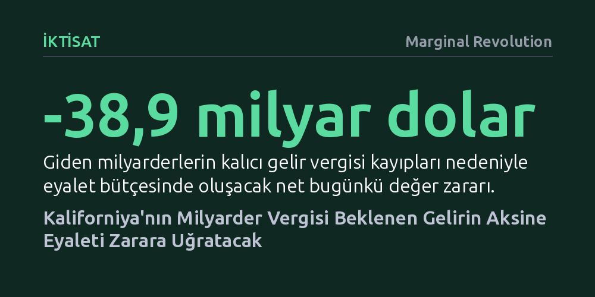

IKTISAT · Marginal Revolution · 2026-10-20
Yeni bir çalışma, Kaliforniya'nın yüzde 5'lik servet vergisinin zenginlerin eyaletten göçünü hızlandırarak beklenenin üçte birinden az gelir getireceğini gösteriyor. Kalıcı gelir vergisi kayıpları hesaba katıldığında düzenleme, eyalet bütçesinde net 38,9 milyar dolarlık kayba yol açacak.
Süper zenginleri bir defaya mahsus vergilendirerek bütçeyi kurtarma fikrinin, sermaye göçü ve kalıcı gelir vergisi kayıpları yüzünden bütçeyi çok daha derin bir açığa sürükleyebileceğini gösteriyor.

Kaliforniya'da gündeme taşınan 2026 Milyarder Vergisi Yasası, net serveti 1 milyar doların üzerindeki bireylerin küresel varlıklarından bir defaya mahsus yüzde 5 oranında vergi almayı hedefliyor. İlk resmi beklentiler ve Galle ile meslektaşlarının 2025 tarihli iyimser projeksiyonları, bu düzenlemenin eyalet hazinesine tek seferde yaklaşık 100 milyar dolarlık devasa bir kaynak sağlayacağını öngörüyordu.
Ancak iktisatçılar Benjamin Jaros ve Joshua Rauh tarafından yayımlanan yeni NBER çalışma tebliği, bu hesabın gerçeği yansıtmadığını ortaya koyuyor. Süper zenginlerin vergiye karşı vereceği göç ve varlık transferi tepkileri modellendiğinde, toplanacak servet vergisinin 28 ila 36 milyar dolar aralığında kalacağı, yani beklenen gelirin üçte birine bile ulaşamayacağı hesaplanıyor.
Araştırmacılar, Forbes Milyarderler Listesi'ni, Kaliforniya'daki lüks gayrimenkul mülkiyet kayıtlarını ve eyaletten ayrıldığını duyuran zenginlerin kamuya açık beyanlarını bir araya getirerek çok yönlü bir davranışsal etki modeli kurdu. Elde edilen veriler, yasanın kamuoyunda ciddiyetle tartışılmaya başlanmasıyla birlikte gerçekleşen zengin göçünün, hedeflenen vergi tabanının yaklaşık yüzde 30'unu şimdiden yok ettiğini gösteriyor.
Bunun yanı sıra elde kalan vergi matrahı da güvende değil. Araştırmacılar, servet vergisi esnekliği literatüründeki tarihsel verileri modele yansıttığı gibi, yasanın anayasaya aykırılık gerekçesiyle mahkemelerden dönebileceğini hesaba katan bir yargı riski indirimi de uyguladı. Bütün bu dinamik tepkiler birleştiğinde, kağıt üzerindeki 100 milyar dolarlık servet matrahı hızla eriyerek yaklaşık 30 milyar dolara geriliyor.
Tasarıyı savunanların gözden kaçırdığı en kritik mesele, bir kereye mahsus servet vergisi tahsil etmek uğruna Kaliforniya'nın her yıl düzenli olarak topladığı kişisel gelir vergisinden mahrum kalmasıdır. Eyalette yaşayan milyarderler, Kaliforniya bütçesine her yıl toplam 3,3 ila 5,8 milyar dolar arasında gelir vergisi kazandırıyor.
Bir milyarder ikametgahını Teksas, Florida veya Nevada gibi gelir vergisi almayan eyaletlere taşıdığında, eyalet sadece tek seferlik servet vergisini kaybetmekle kalmıyor; bu kişilerin gelecekte ödeyeceği tüm gelir vergisi akışını da kalıcı olarak yitiriyor. Bu sürekli gelir kayıplarının bugünkü değeri hesaplandığında, bir seferlik toplanacak servet vergisini fazlasıyla aşıyor ve bütçede net 38,9 milyar dolarlık devasa bir negatif bugünkü değer yaratıyor.
Araştırmacıların farklı gelir projeksiyonları ve iskonto oranlarıyla gerçekleştirdiği 100 bin simülasyonun yüzde 85'inde Kaliforniya eyalet gelirleri net zararla sonuçlanıyor. Statik bir muhasebe mantığıyla hazırlanan düzenleme, en olası ekonomik senaryoların ezici çoğunluğunda eyaleti daha fakir ve bütçe açığıyla baş başa bırakıyor.
Ekonomist Alex Tabarrok'un vurguladığı üzere bu tartışma, "kimin hâlâ bir iktisatçı gibi düşünebildiğini" gösteren kusursuz bir turnusol kağıdı oluşturuyor. İnsanların ve sermayenin vergi artışlarına yer değiştirerek tepki vereceğini unutan politikalar, hedeflenenin tam aksine kamu maliyesine onarılması güç zararlar veriyor.